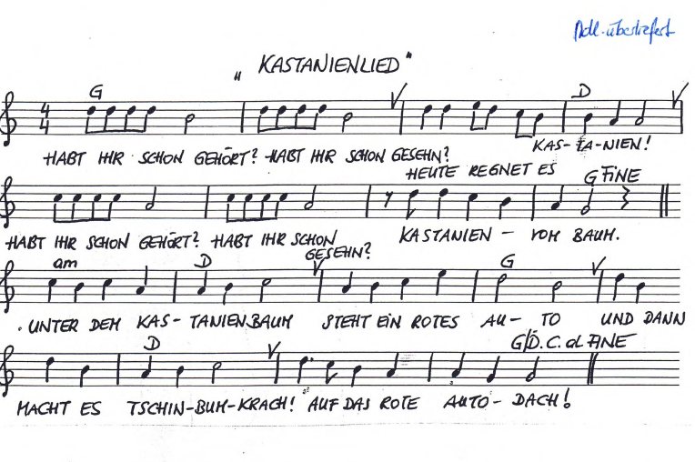
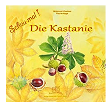

VB Kastanienlied
VORBEREITUNG für den ...
Themenschwerpunkt: Herbst |
|---|
Bildungsinhalt: Liederarbeitung: „Kastanienlied“ |
Bildungsbereich: Ästhetik und Gestaltung |
Didaktisches Prinzip inkl. kurze Begründung: |
Sozialform: Klein-/Teilgruppe |
Alter: Je nach Aufbau – 2-6jährige Kinder (junge Kinder/ältere Kinder) |
Kompetenzen:
Das Kind kann…
Selbstkompetenz: …sein Gefühl für Harmonie und Rhythmus erweitern …Musik in Bewegung umsetzen | Sozialkompetenz: …durch die Musik aufeinander zugehen und dadurch ein Gemeinschaftsgefühl entwickeln | Sachkompetenz: …Begriffsbildung: Kastanie, Autodach |
|---|
Vorüberlegungen: |
|---|
Bildungsmittel/ Medien: Reifen, 3 Holzautos, Kastanien, ORFF-Instrumente, Gitarre |
Zeit | Ablauf | Methodische Hinweise |
|---|---|---|
Motivation Ein-stimmung Hauptteil Vertiefung Ausklang/ Übergang Weiter-führende Ideen | Die Kinder mit einem „Tastsackerl“ abholen: Jedes Kind darf in das Sackerl greifen und eine Kastanie ertasten. Mit der Kastanie setzt sich das Kind um die gestaltete Mitte im vorbereiteten Bereich. Bild/Kreis mit Utensilien aus Kastanien legen (Lied mit Flöte dazu spielen) oder Rätsel oder Fingerspiel oder Reim, welche zum Lied hinführen oder Kurzes Gespräch mit Material (Bilder, Legematerial o. ä.) oder Melodie summen, bis alle Kinder aufmerksam zuhören (beruhigende Stimmung) oder Material, welches zum Lied passt, ansprechend in der Kreismitte präsentieren oder Inhalt des Liedes als Geschichte erzählen oder Bewegungen zum Lied ohne Melodie vorzeigen – Bodypercussion-Elemente Hinführung zur benötigten Tonart: Vor- und/oder Nachspiel mit Instrumenten (Glockenspiel). oder Lied summen und mit der Gitarre begleiten. Gestaltung des Liedes mit Bewegungen/Mimik/Gestik: Ersten Teil der Melodie summen und Bewegungen dazu zeigen. Ersten Teil des Textes sprechen/singen und Bewegungen dazu ausführen. „Heute regnet es“…. – mit den Fingerspitzen „regnen“ lassen Kinder versuchen Teile nachzusprechen/bzw. Lied teilweise nachzusingen, nachdem es ein paar Mal vorgesungen wurde. Zweiten Teil des Liedes sprechen/singen. Zweiten Teil des Liedes mit Material in der Kreismitte ausspielen. Varianten: Frage-Antwortspiel und Ausspielen der Situationen im Lied “Habt ihr schon gehört?“ Echo: „Habt ihr schon gehört?“ Dynamik: Das Lied (laut)/leise, schnell/langsam, etwas höher/tiefer (=Modulation) singen. Zuerst nur Finger, Hände, Arme, Gesichtsausdrücke und Bodypercussion zur Darstellung des Liedtextes einsetzen, als Steigerung den ganzen Körper (Rollenspiel/Ausspielen). Teil: Bewegungen wie oben Teil: Lenkrad andeuten, Finger klopfen vorsichtig Orff-Instrumentarium zur Verfügung stellen. Alle Kinder bekommen ein Instrument oder dürfen selbst eines auswählen. WICHTIG – EXPERIMENTIERPHASE!! Instrumente bieten sich vor allem beim Refrain oder wiederkehrenden Textpassagen an. Konkrete Begleitung für ältere Kinder: Xylophon: Bordunbegleitung (Immer gleicheTonzusammenstellung) oder Tonika und Dominante als Basis (1. und 5. Stufe) Geräuschinstrumente im passenden Rhythmus: BSP: ¾: 1,2,3…Begleitung auf die 1 und 2x Pause… Lied wiederholen – Text kreativ erweitern: Fantasiereise „Im Wald“: IDEENSAMMLUNG: Augen schließen - Körperteile zur Ruhe kommen lassen – Atem bewusst wahrnehmen – „Stell dir vor, du bist ein Baum“ – „Wo lebst du?“ – „Welcher Baum bist du?“ – „Hast du viele Baumbewohner?“ - „Welche Tiere beherbergst du?“ – „Welche Bäume stehen um dich herum?“…. Gemeinsam wird abschließend über die Eindrücke gesprochen und eventuell ein Bild gemalt oder ein Baum aus unterschiedlichen Materialien gestaltet. Aufnahme auf ein Multimediagerät (Dvd, Cd) bzw. Präsentation des Liedes vor Publikum (andere Kindergartengruppe), bei einer Festgestaltung etc. Kastanientiere gestalten Kastanien sammeln gehen und braten Schönes und Interessantes – Blätter, Kastanien… Bilderbuch zum Thema passend: Rhythmik zum Thema Kastanien/Im Wald bzw. Querverbindungen zu anderen Bildungsbereichen Bodypercussion/Kastanie: | Kinder neugierig machen Taktile/auditive Wahrnehmung wird angesprochen Eigene Erlebnisse schildern können und dadurch seine sprachlichen Kompetenzen erweitern Für Kinder mit Deutsch als Zweitsprache Durch die akkordische Begleitung die Tonart wahrnehmen Kinder auf den Inhalt des Liedes mit Bewegungen vorbereiten Bewegung und Liedtext koordinieren Durch Wiederholungen Teile des Liedes verinnerlichen Jüngere Kinder dürfen den zweiten Teil des Liedes mit Materialien ausspielen ohne den Text zu singen Durch abwechslungsreiche Varianten den Inhalt des Liedes vertiefen Ich gestalte gemeinsam mit den Kindern einen „Tanz“ mit dem ganzen Körper zum Lied Begriffsbildung bzw. Wortschatzerweiter- Konkrete Rhythmusvorgaben nachahmen können Ich spiele selbst ein Instrument im gleichen Rhythmus – Nachahmung Mit älteren Kindern den Text erweitern – Erlebnishintergrund Wechsel zwischen Spannung und Entspannung bewusst erleben |
Abbildungen aus dem Dokument


